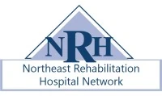
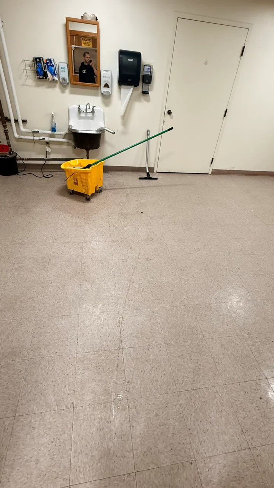
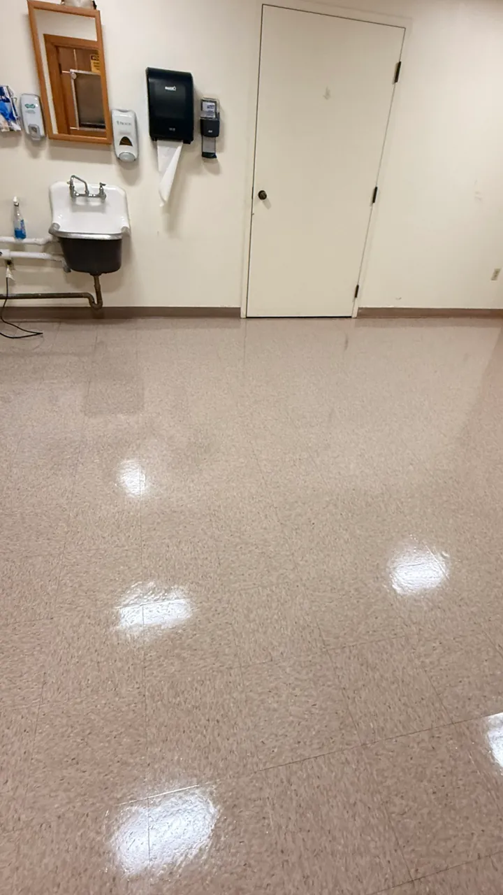
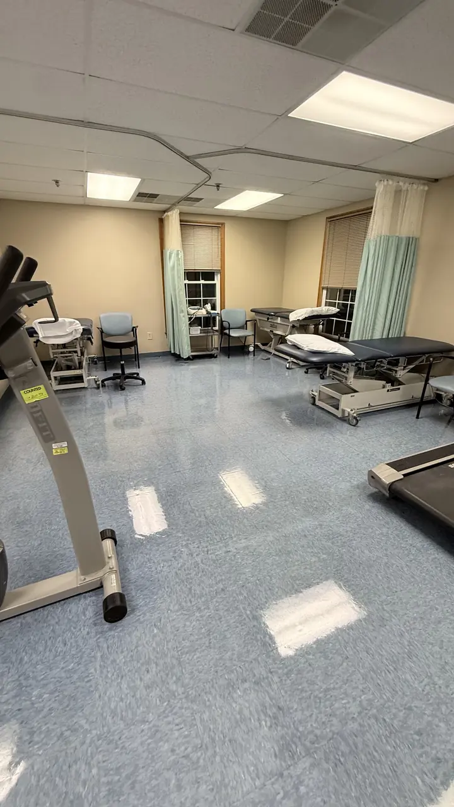
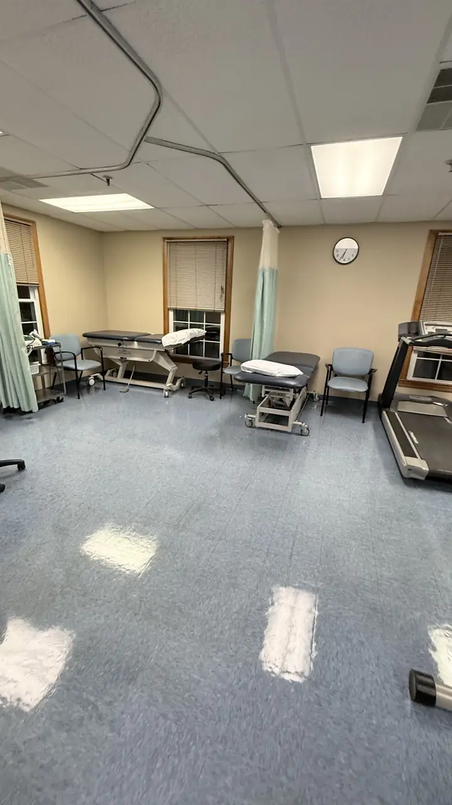

Commercial cleaning in Woburn, MA
Medical facility, office, carpet and floor cleaning for Woburn businesses, from a local crew based in Dracut, MA, about 15 miles away.
Clients · Woburn, MA
Trusted by organizations near Woburn
We already clean for these organizations close to Woburn:
-

Northeast Rehabilitation Hospital Network
Rehabilitation hospital & outpatient clinics
+13 more locations in MA & NH
-
Tallman Eye Associates
Eye care & ophthalmology offices
+4 more locations in MA & NH
Our work
Real results for businesses near Woburn
Photos from our own crews: floor stripping and waxing, medical office cleaning and deep cleaning.

Before
After

Our cleaning services in Woburn
Middlesex County · Massachusetts
Why Woburn facilities choose Clau Cleaning Corp
Woburn, where I-93 meets Route 128, is full of medical, lab and corporate space where hygiene is part of the job.
- Specialists in doctor's offices, medical facilities and laboratories
- Hospital-grade, EPA-registered disinfectants and color-coded microfiber
- HEPA backpack vacuums and color-coded flat mopping system
- Written work schedule, evening service and one point of contact
- Bilingual crew and supervisors: English and Spanish
- 20+ years cleaning in Massachusetts and New Hampshire
Facilities we clean in Woburn
- Doctor's and dental offices
- Clinics and hospitals
- Surgical and imaging centers
- Medical and research laboratories
- Professional offices
- Car dealerships and showrooms
- Churches and parish halls
- Schools and daycares
Frequently asked questions
Do you offer commercial cleaning in Woburn, MA?
Yes. Clau Cleaning Corp cleans medical offices, clinics, laboratories, offices, car dealerships, churches and schools in Woburn and across Middlesex County, Massachusetts. Our crew is based in Dracut, MA, about 15 miles away.
Do you clean medical offices and clinics in Woburn?
Yes. Medical facilities are our specialty. We follow healthcare protocols with color-coded microfiber and hospital-grade, EPA-registered disinfectants.
Do you offer carpet cleaning and floor care in Woburn?
Yes. We do hot water extraction, encapsulation, strip and wax, scrub and recoat and burnishing for commercial buildings in Woburn. Carpet and floor work is quoted per square foot after a free walkthrough.
How do I get a cleaning quote in Woburn?
Call +1 978-328-2406 or fill out our quote form. We schedule a free walkthrough of your Woburn facility and send a written quote within one business day.
Nearby towns we serve
Ready for a cleaner, healthier facility?
Tell us about your building and we'll schedule a free walkthrough and send a written quote within one business day.